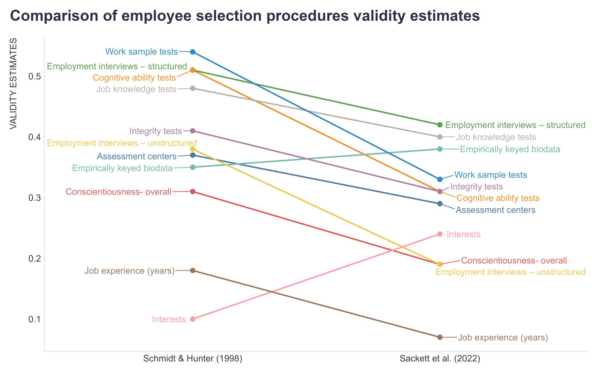

If you are around the same circles as I am, you have probably heard about the latest research from Sackett et al. (2022). Though it feels a bit late, I thought it might be helpful for some people to give a summary of finding and their implications on our field. Now, I don’t believe it is an exaggeration when I say that this article is the most significant piece of research for the field of work psychology in decades. Indeed, I would say a research article of this magnitude has not been published since Schmidt and Hunter (1998), the very paper that Sackett et al. calls into question. Such grandiose statements begs the question: “What makes this paper so important”?
Schmidt and Hunter, 1998
Before we dive into our main topic, I think it would be useful to go back and look at the original research that started this conversation. In their research, Schmidt and Hunter brought together literally hundreds of studies that looked at 19 different measures used to predict performance to answer the question once and for all of what predicts job performance and how strongly. This synthesis of over 80 years of research has been one of the primary studies work psychologist look to when designing selection systems and determining what measures to include or not include. It is one of the most cited papers in the field of personnel selection, with almost 7,000 individual citations in peer-reviewed journals. So given this impact, what were Schmidt and Hunter’s findings?
The big takeaway from Schmidt and Hunter (1998) is that the best predictors of job performance are work samples, cognitive ability tests, and structured interviews. These findings should come as no surprise to any work psychologist. Since I was a graduate student, it was constantly drilled into my head that cognitive ability tests are the single best predictor of job performance we have available, and any selection system that is worth its salt will include such a measure. A lot of this commonly accepted belief stems from Schmidt and Hunter’s research.
Sackett et al., 2022
Enter Sackett et al. (2022) to set the record straight. In this article, the relative rankings of the different measures used to predict job performance are shifted. But I am getting ahead of myself. Now before we get started it is important to state that Sackett et al. (2022) do not dispute the raw estimates of validity calculated by Schmidt and Hunter (1998), but rather the corrected estimates of validity. This is an important distinction that we will dive into.
When Schmidt and Hunter were bringing together all their different studies from across the years for their meta-analysis, they had an important problem to correct for. In predictive validity studies, measures are often given to every applicant who applies, but we only know the job performance of those people who actually get hired for the job. This creates a phenomenon know as range restriction, as the range of scores within our sample will inevitable be smaller than our overall population (our sample will naturally be those who scored higher on our measures, otherwise they likely wouldn’t be selected for the position). The more range restriction there is in a dataset, the harder it is for an individual measure to actually predict anything. Let’s think of an example. If we all took a test on say, math, and we all got the same exact score, it would be impossible to tell who actually knew more about math based on that particular test. What’s more, it would also be impossible to draw any conclusions about who would make a better accountant based on those test results. This is an extreme example, but you get the point. Range restriction severely limits our ability to predict anything meaningful from our data. The field of work psychology has long known about range restrictions and has ways to deal with it in our data. For Hunter and Schmidt, the solution was simple enough. They calculated an average range restriction for all of their studies based on what was reported and applied that average across their sample. This solution sounds perfectly reasonable. That is, until you consider the fact that the majority of validation studies are concurrent studies, not predictive studies.
“Wait, hold on. What is this about concurrent validity studies? Weren’t you just talking about predictive validity studies?” I am glad you asked, my observant reader. As a brief overview, concurrent validity studies are almost exactly the same as predictive validity studies, with one important difference. In the context of selection assessments, concurrent validity studies do not predict future job performance, but current job performance. When looking at this operationally, this means giving your measure to current employees and comparing their test results to their current job performance. For a myriad of reasons (costs, time, risk) concurrent validation studies are used FAR more commonly than predictive validity studies to validate that your measure is actually predicting job performance. In fact, Sackett et al. (2022) found that something like 80% of studies were concurrent validity studies. Now concurrent validity studies do not usually have the same issues with range restriction that predictive validity studies do, because in concurrent studies you have access to data for the whole population (at least in theory).
Let’s go back to Schmidt and Hunter’s (1998) method for correcting for range restriction. As a recap, they averaged the range restriction across their studies, and used that average to calculate a corrected validity coefficient (the higher this number, the stronger the relationship between the test and job performance). Except, many concurrent validity studies do not report range restriction statistics, as there are no concerns of range restriction. And concurrent validity studies make up the majority of validity studies. This leads to an inflated average range restriction, and therefore an inflated validity estimate (as range restriction increases, the higher the correction will be). Oops.
So given this problem, what does Sackett et al. (2022) do to correct for it? Sackett et al. (2022) conducted a new meta-analysis, that consider studies on a case by case basis, and determined if a correction for range restriction was reasonable. Then, based on this new approach, new validity coefficients were calculated. In general (with a couple of notable exceptions that we will get to) this resulted in validity coefficients going down. It also shifted what measured rose to the top as the “best” predictors of job performance (see below for a visual representation).
So we seemingly have a new king of predicting job performance, with structured interviews topping the heap, followed closely behind by job knowledge test and empirically keyed biodata (things like work experience, education, health history, and other personal characteristics). The big news here is that both work sample tests and cognitive ability tests fell quite a bit down the rankings. The cognitive ability tests results is particularly significant, because as I said the long held wisdom has been that cognitive ability test is the best predictor of job performance that can be quickly assessed (work sample tests are often a lot more resource demanding). I want to dive deeper into the cognitive ability results, as the masterminds behind this study have some new studies that shine further light on cognitive ability, but for now let us leave it at that. Another interesting finding is that Interests has shot up the charts. Sackett et al. (2022) attribute this rise to newer studies focusing on how closely a person’s interests match the job, rather than the old methodology of combining validity of various scales across jobs. In my professional opinion, this is a predictor to keep an eye on. It has long been dismissed, but researchers are starting to wake up to the fact that having an Interest in your work does matter when considering job performance.
From my vantage point, these results reinforce something we have always known: selection tests work best when they are tailored to the individual job, as measures that tend to be more tailored rose to the top of the rankings. In other words there is no one size fits all model, no magic bullet for selection assessment. At least not without some substantial tradeoffs. And Sackett et al. (2022) go into some of those tradeoffs, specifically focusing in on adverse impact. There is a very helpful visual (shown below) that maps measured adverse impact for Black-White race groups relative to their added predictive validity. Cognitive ability (GMA) is of particular note, as it has the highest adverse impact of all the measures studied.
Cognitive Ability in the Modern World
Now I hate to keep picking on cognitive ability here, but it has had its time in the sun, so I think it is reasonable to raise some concerns at this point. See, one of the issues from the Schmidt and Hunter (1998) study is that the data is very old. The world of work has changed dramatically in just the 25 years since that study was originally published, not to mention the fact that many of the studies used in their study were far older. So Griebe et al. (2022) have set out to explore how cognitive ability has done at predicting job performance in the 21st century. They gathered 153 studies from both the academic and business world (they collaborated with consultants to collect real world data) with a sample size of 40k+. Now, I can’t show the specific numbers, as Griebe et al. is a SIOP poster presentation, but the punchline is this: the relationship between cognitive ability and job performance was weaker than that found in Schmidt and Hunter (1998) and Sackett et al. (2022). It was still a fairly significant predictor mind you, though weaker than what was previously thought. “How can this be?” you might ask, “Haven’t our jobs gotten more complicated over-time?” Well yes and no. In the strictest sense of the word, yes our jobs are orders of magnitude more complicated than what they used to be. However, the reason we are able to do these more complex jobs in the first place is because new technologies have emerged to help us with our jobs (side note: I’m hoping to do an article on how AI plays into all of this soon). In addition, many jobs have shifted toward more team-based, collaborative types of work, which may require a different skill set than that typically measured in a cognitive ability test. All of these points were made by Sackett et al. (2023).
The Counter-Arguments
Sackett et al.’s (2022) findings have not gone unchallenged. In particular, Oh et al. (2023) have raised concerns regarding the frequency of range restriction in concurrent studies. In their view, range restriction in concurrent studies is a far more common occurrence than Sackett et al. believe. These concerns are echoed by Ones and Viswesvaran (2023), who argue that range restriction occurs in a variety of different ways, both direct and indirect, and that range restriction frequently needs to be corrected for in concurrent studies. They argue that just because range restriction statistics are not reported, it does not mean that range restriction is completely absent from the data. The common thread here is that these critics believe that range restriction is a common issue in concurrent studies, and should be corrected for. To leave out these corrections, they argue, would lead to a under-estimation of the true predictive power of these measures.
The Sackett et al. team have dutifully responded to these criticisms. First, they point out that you can’t correct for range restrictions if the appropriate mechanisms are not reported, as is often the case when attempting to combine multiple studies. I find this to be a fair point. You can’t correct for something based on the assumption it is there. It is better (in my mind at least) to err on the side of the observed value. Second, they argue that range restriction is much more uncommon in concurrent studies. I’ll put the references down below in case you want to see the specific points made, but that pretty much sums it up.
The Bottom Line
So what does this all mean? Well if nothing else it has led to some serious questioning of previously held assumptions within our field. Looking at all the evidence, I tend to side with Sackett et al. (2022). I just don’t see how we can make corrections for range restriction if we don’t have the data available to properly calculate what the actual range restriction looks like. But I encourage others to look at the evidence themselves and come to their own conclusions. How does this impact our industry? Well like I mentioned earlier, I think these findings support something we have known for a long time: you need to tailor the selection system to the individual job and the specific circumstances of that job. While it would be convenient to have a one sized fits all selection system, that is just not feasible. Tailoring your selection system can result in higher predictive power and much better outcomes. This principle applies to cognitive ability just as much as other measures. For some jobs, cognitive ability is likely to be very important. For others, maybe not so much. So in one sense, nothing has changed. We still need to decide what measures to use on a case-by-case basis. But Sackett et al. (2022) serves as a stark reminder of the importance of conducting customized research, rather than rely on the assumptions of past research.
References
1. Griebe, A., Bazian, I. M., Demeke, S., Priest, R., Sackett, P. R., & Kuncel, N.R. (A contemporary look at the relationship between general cognitive ability and job performance. Presented at the 37th Annual Conference of Society for Industrial and Organizational Psychology, Seattle, WA. 2022).
2. Oh, I., Le, H., & Roth, P. L. (2023). Revisiting Sackett et al.’s (2022) rationale behind their recommendation against correcting for range restriction in concurrent validity studies. Journal of Applied Psychology.
3. Ones, D. S., & Viswesvaran, C. (2023). A response to speculations about concurrent validities in selection: Implications for cognitive ability. Industrial and Organizational Psychology.
4. Sackett, P. R., Berry, C.M., Zhang, C., & Lievens, F. (2023). Revisiting the design of selection systems in light of new findings regarding the validity of widely used predictors. Industrial and Organizational Psychology.
5. Sackett, P. R., Zhang, C., Berry, C. M., & Lievens, F. (2022). Revisiting meta-analytic estimates of validity in personnel selection: Addressing systematic overcorrection for restriction of range. Journal of Applied Psychology, 107, 2040–2068.
6. Sackett, P., Berry, C., Lievens, F., & Zhang, C. (2023). A reply to commentaries on “Revisiting the design of selection systems in light of new findings regarding the validity of widely used predictors”. Industrial and Organizational Psychology, 16(3), 371-377. doi:10.1017/iop.2023.47.
7. Schmidt, F. L., & Hunter, J. E. (1998). The validity and utility of selection methods in personnel psychology: Practical and theoretical implications of 85 years of research findings. Psychological Bulletin, 124, 262–274.